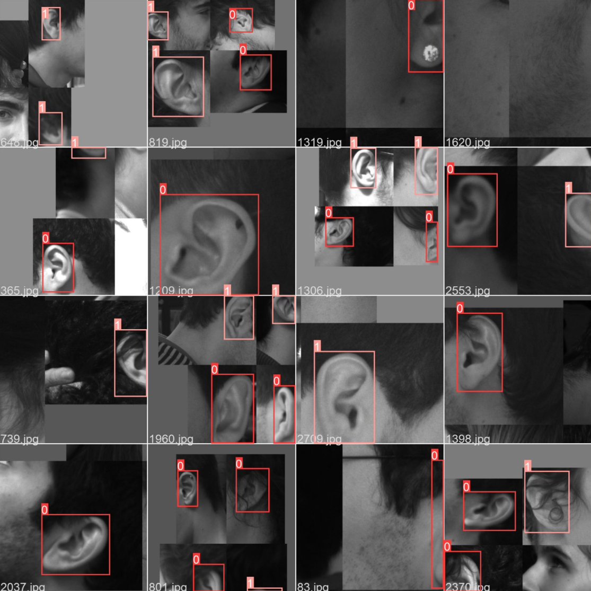
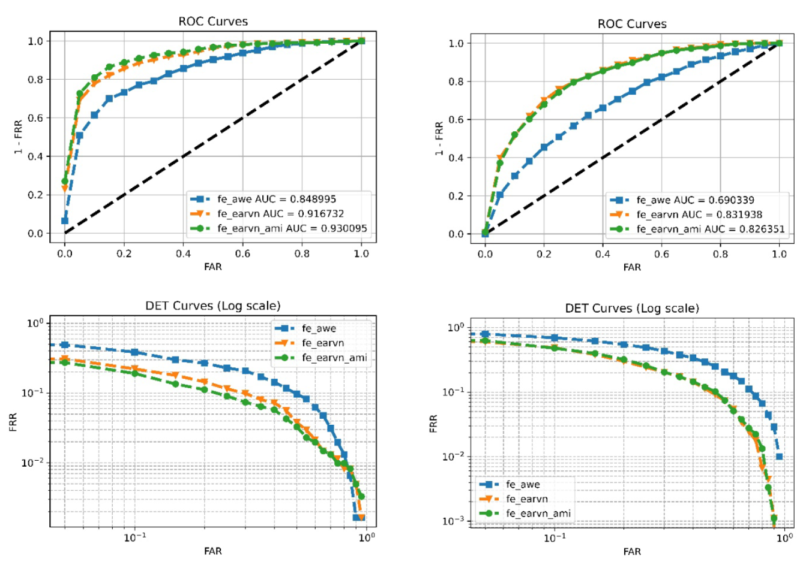

Course Project, Biometric Systems
Biometric Systems make use of human features for identification purposes. One
such feature is the ear, which greatly varies across individuals, it’s non-invasive to capture because it only requires a photo, and it doesn’t change much after the first 8 years of life and before 70. All these characteristics make the ear very appealing to biometric experts and it’s growing in popularity in the recent years.
Our objective is to build a system which performs ear recognition using Neural Networks and deploy it on an Android mobile application using Tensorflow Lite.
The pipeline of the system is:
We used Python and various libraries to build, train and evaluate our models. To improve the performance and to fairly evaluate the models, we used multiple datasets.

For the detection part, YoloV5 is a very powerful neural network even when trained for a low number of epochs, and even considering its tiniest implementation. We decided to use the nano version after many ‘trial and error’ trainings, going down from the medium-sized, which was too heavy for a phone to be handled without stuttering.
Our objective was to build an entire biometric system and implement it for a mobile device, and for this reason it couldn’t easily reach the higher performance of the current state of the art models.
Talking about the performance of the app, adding the detection for the motion led to a nice optimization, because it heavily reduced both lag issues and blurred captures. We are satisfied about the experience of the app because it requires the user only to tap on the option and to put the device in front of the ear, simulating the behavior of a “Face ID” unlock, but for the ear.
Starting from pre-trained models was a great choice, even though it wasn’t as easy to implement as initially thought, since it still required great attention on data augmentation and finetuning of the models. We are overall satisfied with the system we were able to build, and the experience acquired during its design and implementation.
More details can be found in the Project Report.